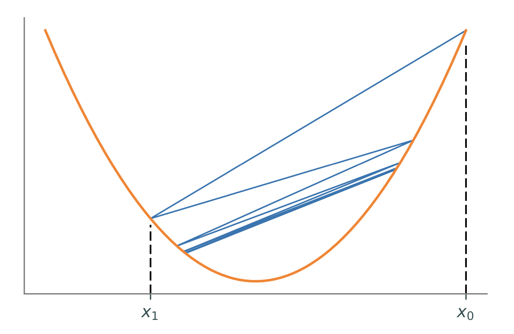

Lab 12: One-dimensional Optimization and Gradient Descent¶
Most mathematical optimization problems involve estimating the minimizer(s) of a scalar-valued function. Many algorithms for optimizing functions with a high-dimensional domain depend on routines for optimizing functions of a single variable. There are many techniques for optimization in one dimension, each with varying degrees of precision and speed. In your lab for 341, you used Newton’s method to find the roots of an equation. We will adapt this method to find optimal points (i.e., maxima and minima) of a one-dimensional equation. After doing this we will consider the problem of gradient descent.
Newton’s Method for optimization¶
One might not expect that Newton’s method can also be used for optimization. Recall that the first-order necessary conditions from elementary calculus state that if \(f\) is differentiable, then its derivative evaluates to zero at each of its local minima and maxima. Therefore using Newton’s method to find the zeros of \(f'\) is a way to identify potential minima or maxima of \(f\). Specifically, starting with an initial guess \(x_0\), set
and iterate until \(|x_k - x_{k-1}|\) is satisfactorily small. Note that this procedure does not use the actual function \(f\) at all, but it requires many evaluations of its first and second derivatives. As a result, Newton’s method converges in few iterations, but it can be computationally expensive.
Newton’s method for optimization works well to locate minima when \(f''(x) > 0\) on the entire domain. However, it may fail to converge to a minimizer if \(f''(x) \leq 0\) for some portion of the domain. If \(f\) is not unimodal, the initial guess \(x_0\) must be sufficiently close to a local minimizer in order to converge.
Task 1¶
Let \(f : \mathbb R \to \mathbb R\).
Adapt your code for Newton’s method from Lab 11: Root Finding and Newton’s Method to write a function, newton(df, d2f, x0, tol, maxiter), that accepts the first and second derivatives of a function, df and d2f, a starting point, x0 (defaulting to 0), a stopping tolerance, tol (defaulting to 1e-8), and a maximum number of iterations, maxiter (defaulting to 100). Implement Newton’s method using the formula above to locate a local optimizer. Return the approximate optimizer, whether or not the algorithm converged, and the number of iterations computed.
Task 2¶
Test your function from Task 1 by minimizing x ** 2 + sin(5 * x) with various initial guesses, tolerances, and iteration constraints. Compare your results to opt.newton(), which implements the root-finding version of Newton’s method.
Descent Methods¶
Consider now a function \(f : \mathbb R^n \to \mathbb R\). Descent methods, also called line search methods, are optimization algorithms that create a convergent sequence \((x_k)\) by the following rule.
Here \(\alpha_k\) is called the step size and \(\mathbf p_k\) is called the search direction. The choice of \(\mathbf p_k\) is usually what distinguishes an algorithm; in the one-dimensional case \(n = 1\),
results in Newton’s method.
To be effective, a descent method must also use a good step size \(\alpha_k\). If \(\alpha_k\) is too large, the method may repeatedly overstep the minimum, as shown in the figure below; if \(\alpha_k\) is too small, the method may converge extremely slowly.
{kind=link}
Given a search direction \(\mathbf p_k\), the best step size \(\alpha_k\) minimizes the function
Since f is scalar-valued, \(\phi_k : \mathbb R \to \mathbb R\), so Newton’s method (or any other 1-D optimization method) can be used to minimize \(\phi_k\).
The Method of Steepest Descent¶
Let \(f:\mathbb R^n\to\mathbb R\) with first derivative \(Df:\mathbb R^n\to \mathbb R^n\). The following iterative technique is a common template for methods that aim to compute a local minimizer \(\mathbf x^*\) of \(f\):
Here \(\mathbf x_k\) is the k-th approximation to \(\mathbf x^*\), \(\alpha_k\) is the step size, and \(\mathbf p_k\) is the search direction. Newton’s method and its relatives follow this pattern, but they require the calculation (or approximation) of the inverse Hessian matrix \(Df^2(\mathbf x_k)^{-1}\) at each step. The following idea is a simpler and less computationally intensive approach than Newton and quasi-Newton methods.
The derivative \(D f(x)^T\) (often called the gradient of \(f\) at \(x\), sometimes notated \(\nabla f(x)\)) is a vector that points in the direction of greatest increase of \(f\) at \(x\). It follows that the negative derivative \(-D f(x)^T\) points in the direction of steepest decrease at \(\mathbf x\). The method of steepest descent chooses the search direction \(\mathbf p_k = -D f(\mathbf x_k)^T\) at each step of (1), resulting in the following algorithm.
Setting \(\alpha_k = 1\) for each \(k\) is often sufficient for Newton and quasi-Newton methods. However, a constant choice for the step size in (2) can result in oscillating approximations or even cause the sequence \((\mathbf x_k)_{k=1}^\infty\) to travel away from the minimizer \(\mathbf x^*\). To avoid this problem, the step size \(\alpha_k\) can be chosen in a few ways.
Start with \(\alpha_k = 1\), then set \(\alpha_k = \frac{1}{2}\alpha_k\) until \(f(\mathbf x_k - \alpha_k D f(\mathbf x_k)^T) < f(\mathbf x_k)\), terminating the iteration if \(\alpha_k\) gets too small. This guarantees that the method actually descends at each step and that \(\alpha_k\) satisfies the Armijo rule, without endangering convergence.
At each step, solve the following one-dimensional optimization problem.
\[\alpha_k = \mathrm{argmin}_{\alpha} f(\mathbf x_k - \alpha D f (\mathbf x_k)^T)\]Using this choice is called exact steepest descent. This option is more expensive per iteration than the above strategy, but it results in fewer iterations before convergence.
Task 3¶
Write a function, grad_descent_const(df, x0, a, tol, maxiter) that accepts the derivative of an objective function, df, an initial guess, x0, a constant step size, a, a convergence tolerance, tol, defaulting to 1e-8, and a maximum number of iterations, maxiter, defaulting to 100, and computes the minimizer via the constant method of steepest descent (gradient descent with constant step size). Return the approximate minimizer, whether or not the algorithm converged, and the number of iterations computed.
Why does satisfying the convergence condition not guarantee that we converged sufficiently close to a minimizer for this version of gradient descent?
Task 4¶
Adapt your code from the previous exercise to write a function, grad_descent_exact(f, df, x0, tol, maxiter), that takes as input a differentiable function, f, its derivative, df, an initial guess, x0, an allowed error tolerance, tol, and a maximum number of iterations, maxiter, and uses exact gradient descent to find a minimizer for f. Return the minimizer, whether the algorithm converged within the error tolerance, and the number of iterations computed.
Specifically, compute a for each step of the algorithm by finding the minimizer of f(x - a * df(x)) for a fixed x instead of accepting it as an argument.
Task 5¶
The convergence of an algorithm is the function, L(tol), (often simplified to the largest order) that describes how the number of iterations to converge within the error tolerance as that tolerance gets closer to zero. Newton’s method for optimization is a quadratic method and exact gradient descent is a linear method. Optimization methods tend to work best when the function we are optimizing on is convex. This is because convex functions have a unique minimizer.
The Rosenbrock function, f = lambda x, y: (a - x) ** 2 + b * (y - x ** 2) ** 2 is non-convex for all values of a, b except a, b = 0, 0. Classically, we set a, b = 1, 100. As such, it takes much longer for gradient descent to converge for this function than most convex functions.
Write a function, plot_convergence(a, b), that takes as input the constants for the Rosenbrock function, a, b, and performs gradient descent on the corresponding version of the Rosenbrock function for many values of tol, recording the number of iterations needed to converge (making sure that the algorithm converged), using x0 = np.zeros(2), and then creates a plot of the number of iterations needed to converge, n, as a function of the required error tolerance, tol, with tol measured on a logarithmic scale (use plt.semilogx instead of plt.plot). Make sure to label your plot and axes.
Notice that your graph ought to look approximately linear i.e. like a step function that is bounded above by a linear function for the given axes.